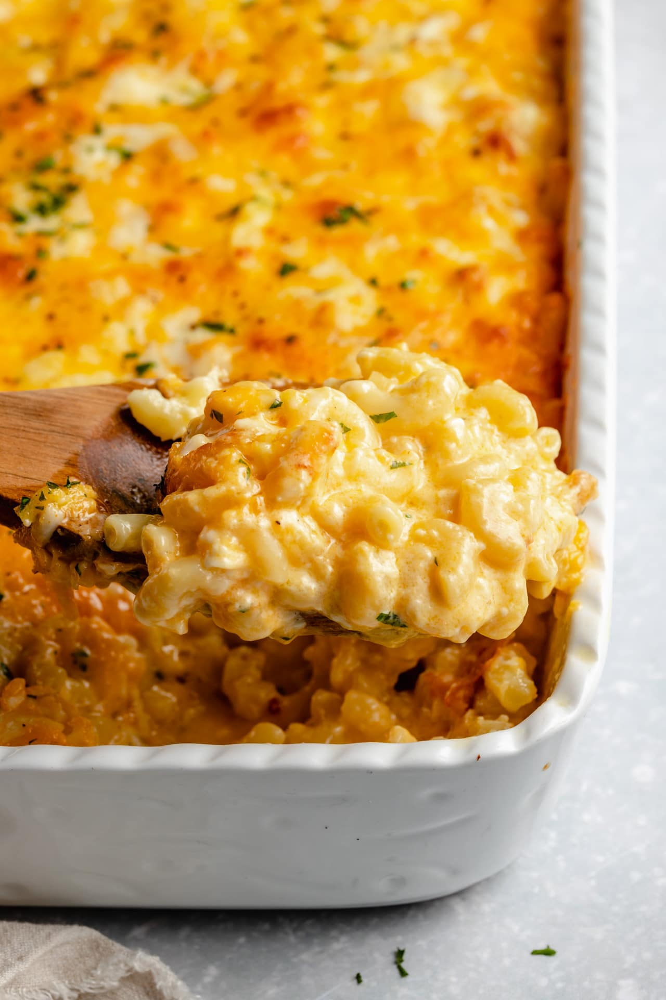

Smackin' Mac

Everybody knows if the mac and cheese ain't hitting then the holiday dinner is RUINED. However have no fear with this Smackin' Mac recipe you'll be the cousin that everybody begs to make the mac!
- 1/2 sticka butta
- 2tsp salt
- 1tbs vegetable oil
- 1lb elbow noodles
- 3 large egg
- 1/2 of your favorite cheeses
- Preheat the oven to 350 degrees F. Grease a 9-by-13-inch pan with butter.
- Bring a large stockpot of water to a boil with the sea salt and oil. Add the noodles and cook for 7 minutes. Drain and cool the pasta.
- Place the cooked noodles in a large bowl. Pour the melted butter over the pasta. Add 1/4 teaspoon of the pepper and 1/4 teaspoon of the seasoned salt and mix well, then add the eggs. Add the mild Cheddar, sharp Cheddar, Monterey Jack, mozzarella, muenster, pepper Jack and provolone, and mix thoroughly. Make sure the cheese is evenly mixed into the noodles. Transfer the noodles to the prepared casserole dish.
- Sprinkle the dish with the remaining 1/4 teaspoon black pepper and 1/4 teaspoon seasoned salt, and top with the processed cheese product. Pour the cream over the top. Bake the mac and cheese until it starts to bubble around the edges, 35 minutes. Serve hot.